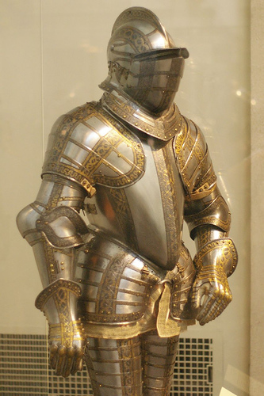
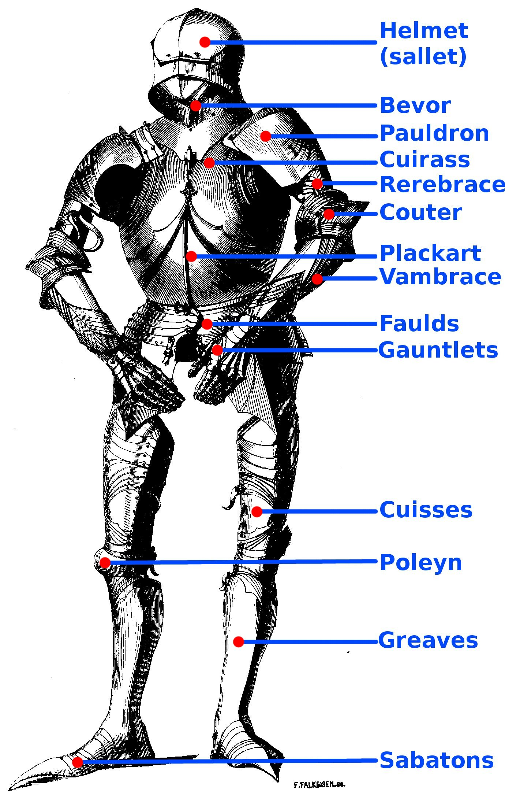

Full Plate armor
Armor was very necessary in war times. People needed to defend themselves from others. Many people, knights and mercenaries alike used full plate armor to protect them from different types of weapons. Full plate armor was particularly good at countering blades of many sorts. Blades cannot cut through steel, so people used blunt weapons to get through armor. The gaps in the armor allowed for much needed mobility, but those open areas were open to attacks of any sort. Nobles were usually the ones to own armor like this, as it's very expensive to make a buy. It took a lot of work and helped a lot in battles. Greatswords, spears, polearms, and hammer like weapons were used to combat full plate armor. Smaller weapons like a longsword, daggers, messers, and other short bladed weapons weren't very good at fighting plate armor, as the gaps would have been too hard to get to. Full plate armor was used in the Late Middle Ages. The 15th and 16th centuries were when the full plate armor came up.The armor was usually used by heavy cavalry like the gendarmes. Landsknechts, or German mercenaries, used a lighter version of the plate armor.
Military Armor

This is full plate armor. it covers most of the body and is quite honestly some of the best smith work ever done. It allowed for amazing protection as it has a long rarebrace on the arm, making it basically impenetrable. There is basically no gap in the shoulder area of the armor, so it would be almost impossible to get to.
Show Armor
Armor of James Scudamore a knight in the elizabethan era. He had left behind some of the best armor of that time. Whether it was show armor or the armor he actually used, it looked amazing.
Armor Components
A list showing different pieces of armor. The helmet and bevor protect your neck and head. The pauldrons protect your shoulders, cuirass your upper torso, plackart your lower torso. The rerebrace couter and vambrace protect your arms. The cuisses, poleyn, greaves, and sabatons. Poulaine isn't in the picture, but it protects your feet. This armor set in particular would be fairly hard to go up against, because the people who had it usually wouldn't use big weapons. The armor is strapped to you unlike other types of armor, so it was fairly comfortable, but it was still heavy.